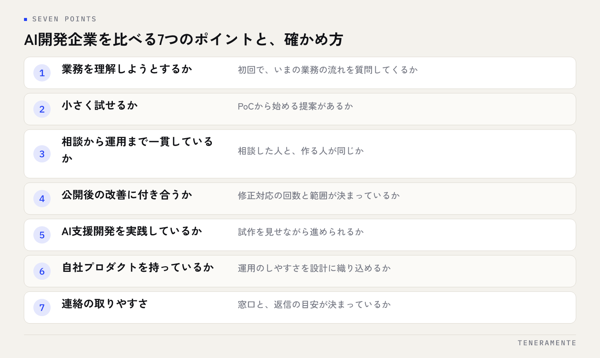

AI開発企業の選び方で最初に見るべきなのは、技術力の高さや実績の数ではなく、自社の業務を理解しようとする姿勢と、小さく試せる進め方があるかどうかです。この記事では、大手SIer・フリーランス・地域の開発会社の違いを整理したうえで、名古屋の中小企業が比較すべき7つのポイントと、見積もりを比べるときの見方をまとめます。
📌 この記事の結論
AI開発は「作って終わり」になりやすい投資です。相談から運用まで同じチームが付き合い、小さく試して直し続けられる会社を選ぶことが、中小企業にとっていちばんのリスク回避になります。
01大手SIer・フリーランス・地域の開発会社の違い
AI開発を頼める相手は、大きく3つに分かれます。どれが正解というより、案件の規模と、公開後に誰が付き合うかで向き不向きが決まります。
| 依頼先 | 得意なこと | 注意したいこと |
|---|---|---|
| 大手SIer（システム開発会社） | 要件が固まった大規模案件、体制の厚さ | 小さな相談は受けにくい。窓口と作る人が分かれやすい |
| フリーランス | 小さく速く、費用を抑えやすい | 一人に依存する。不在時や契約終了後の保守が課題 |
| 地域の開発会社 | 対面で話せる。中小規模の業務に慣れ、運用まで付き合いやすい | 会社ごとの差が大きい。見極めが必要 |
中小企業の業務改善なら、小さく始めて長く付き合える相手が合いやすいのですが、地域の開発会社は、会社ごとの差が大きいのも確かです。そこで、次の7つのポイントで見極めます。
02比較ポイント1〜3：業務理解・小さく試せるか・一貫した体制
1. 業務を理解しようとするか

初回の相談で、技術やAIの話より先に「今はどうやっていますか」「どこが面倒ですか」と業務の流れを聞いてくるかどうか。ここを聞かずに提案書が出てくる会社は、汎用的なものを当てはめようとしている可能性があります。
2. 小さく試せるか
PoC（Proof of Concept：試作）や小さな範囲から始める提案があるか。最初から全機能をまとめて作る提案しか出てこない場合、うまくいかなかったときの損失が大きくなります。
3. 相談から運用まで一貫しているか
営業・設計・開発・保守を同じチームが担っているか。分業が多いほど「言ったことが伝わっていない」が起きやすく、修正のたびに時間と費用がかかります。相談した人と作る人が同じかは、最初に聞いてよい質問です。
03比較ポイント4〜7：改善・AI支援開発・自社プロダクト・連絡
4. 公開後の改善に付き合うか
月額の保守に何が含まれるか（サーバー・監視・修正対応の回数）、使い始めてからの改善提案があるか。業務アプリは公開してからが本番で、機能を減らしたり足したりする作業が続きます。
5. AI支援開発を実践しているか
Claude Code（Anthropic社のAIコーディング支援ツール）などを実際の開発工程で使っているか、それが発注側に「試作が早く出る」「修正の往復が軽い」という形で返ってくるか。進め方の説明で確かめます。確かめ方はClaude Codeでのアプリ開発は何が違う？｜進め方・品質・費用にまとめています。
6. 自社プロダクトを持っているか
自分たちのサービスを運用している会社は、公開後に起きること（問い合わせ対応、不具合の修正、改善の優先順位づけ）を身をもって知っています。運用のしやすさを設計に織り込む傾向があります。
7. 連絡の取りやすさ
窓口が誰か、返事の目安はどれくらいか、チャットで気軽に聞けるか。小さな疑問をすぐ解消できるかどうかが、公開後の満足度を左右します。
04見積もり比較で見る項目
複数社の見積もりは、金額の大小より「同じ範囲を比べているか」を先に確認します。
- 初期費用の範囲：ヒアリング・設計・開発・公開作業が含まれるか。追加費用の有無
- 月額費用の範囲：サーバー・ドメインの費用、システム監視、修正対応の回数
- フェーズ分け：PoCから始められるか、どこで一度立ち止まって判断できるか
- 完成の定義：検収の基準（テストケース）が書かれているか
- ミーティングの回数と、発注側の作業量
- 技術構成：一般的な技術で作られ、ほかの会社にも引き継げるか
- 生成AIのAPI利用料など、変動する費用の扱い
区分の書かれていない見積書は、上のリストに沿って同じ形に揃えてもらうと比べやすくなります。とくに「初期費用に公開作業まで入るか」「月額に修正対応が何回入るか」の2つは総額を大きく動かすので、口頭ではなく数字で書いてもらってください。AI導入でつまずきやすい点は中小企業のAI導入が失敗する7つのパターンも参考にしてください。
05名古屋・地域の会社に頼む意味
開発はリモートでも進められます。それでも地域の会社に頼む意味があるとすれば、次の点です。
- 現場を見てもらえる：業務の流れは、口で説明するより見てもらったほうが早く伝わります。紙や手書きのメモが混ざる業務ほど、対面の価値が上がります
- 画面を一緒に触れる：試作の確認を同じ画面で行うと、修正の指示が具体的になります
- 長い付き合いを前提にできる：業務アプリは公開後も数年単位で直し続けるものです。すぐ会える距離は、その継続を支えます
ただし、距離は加点要素であって、7つのポイントを満たしていることが先です。近いから選ぶのではなく、条件を満たす会社が近くにあるなら選ぶ、という順番で考えてください。近くの候補なら、一度オフィスを訪ねて、窓口の担当者だけでなく実際に開発する人と話してみるのが確実です。それだけで、3つ目のポイント（相談から運用まで一貫しているか）はほぼ判断できます。
06よくある質問
実績が少ない会社は避けるべきですか？
相見積もりは何社取ればよいですか？
相談の前に準備しておくことはありますか？
07まとめ：AI開発企業の7つの比較ポイントを、初回相談で確かめる
AI開発企業の選び方は、業務を理解しようとするか・小さく試せるか・相談から運用まで一貫か・公開後の改善に付き合うか・AI支援開発を実践しているか・自社プロダクトを持っているか・連絡が取りやすいか、の7点に集約されます。どれも初回の相談で確かめられることばかりです。質問する側に回るつもりで臨めば、会社の姿勢は自然と見えてきます。AI業務改善の全体像はAI業務改善アプリ開発 完全ガイドにまとめています。
TENERAMENTEは2022年7月に設立した名古屋ルーセントタワー拠点のAI開発企業で、要件整理から設計・開発・運用までを内製し、全工程でClaude CodeなどのAI支援開発を活用しながら、ミエルーム・ミルページ・LDash・MEOツールの4つの自社プロダクトを運用しています。AI×WEBアプリ開発は初期費用30万円〜、3回のミーティングで進め、公開後は月額定額の保守・運用に移ります。初回相談は60分無料ですので、この記事の7つのポイントをそのまま質問にしてお持ちいただいて構いません。お問い合わせからご相談ください。